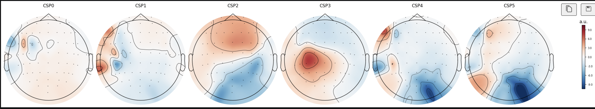
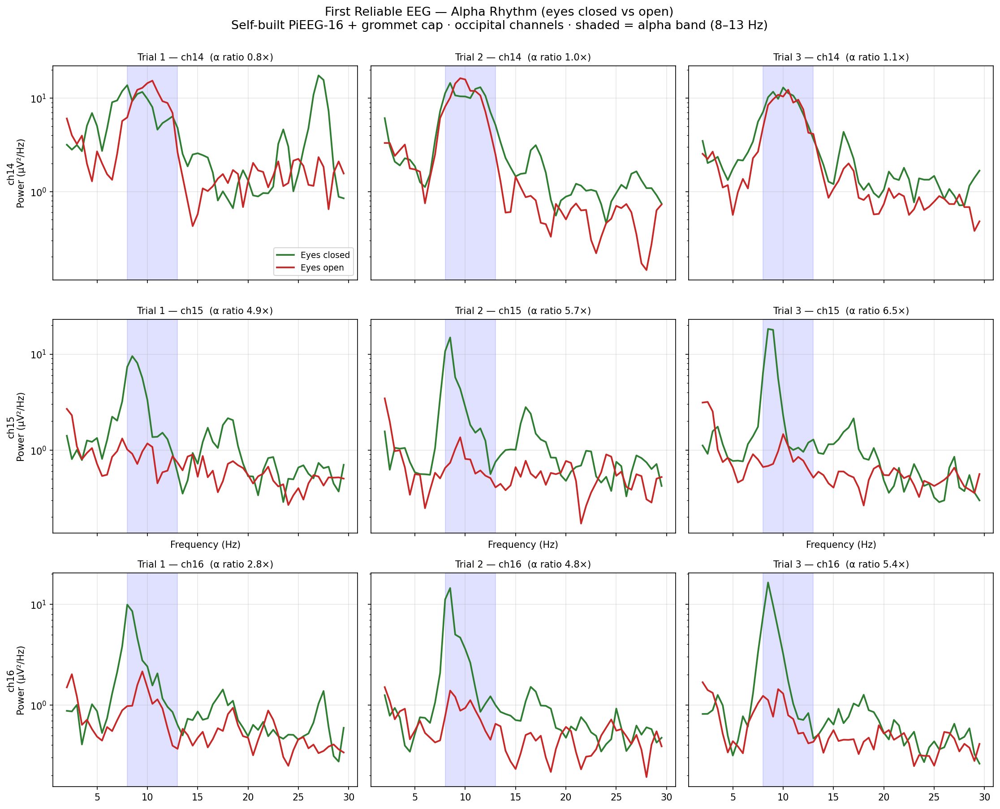
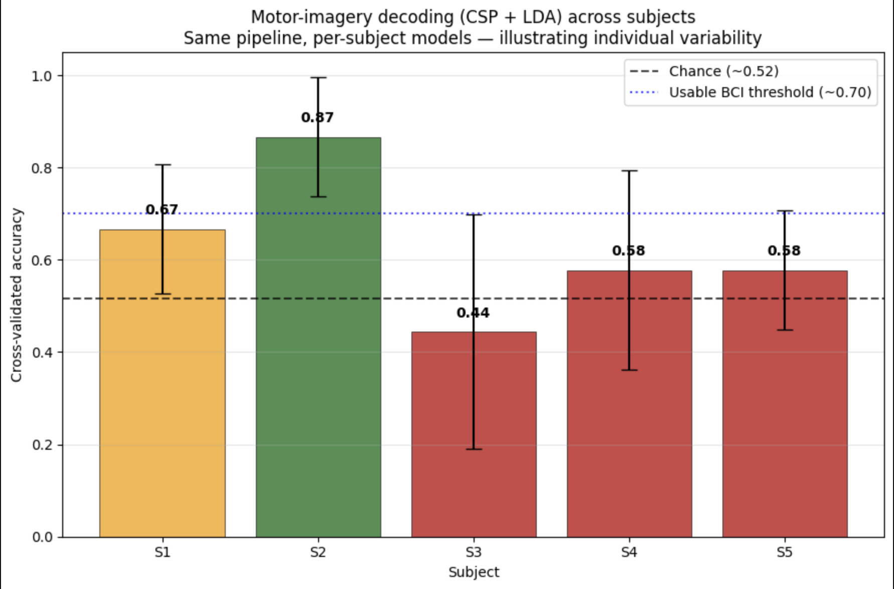

A full signal-processing and machine-learning pipeline — built and validated on research-grade data before ever touching hardware.
The guiding principle of the whole project: develop and validate the pipeline on trusted public data first, then feed my own hardware recordings through the identical path. That way, when my own data underperformed, I could trust the pipeline and look at the signal — not the code.
The MNE-Python library loads the PhysioNet EEG Motor Movement/Imagery dataset — 64-channel, 160 Hz recordings of imagined left/right-hand movement. Clean, research-grade data used to build and prove every stage before hardware existed.
The PiEEG board saves raw CSVs — 16 channels at ~250 Hz. A custom loader epochs these using the cue-log timestamps into the exact same (trials × channels × samples) format the pipeline already expected.
Every recording runs through the same chain: a 60 Hz notch filter to kill mains interference, a 8–30 Hz bandpass to isolate the mu and beta rhythms that motor activity modulates, then epoching into labeled trials around each cue. The whole thing is packaged into clean, reusable src/ modules so the identical validated pipeline runs on both data sources.
This is the full-circle moment of the project — my own hardware recording, flowing through the very same src/ pipeline that was validated on PhysioNet:
import sys
from pathlib import Path
sys.path.append(str(Path.home() / "projects" / "bci"))
import pandas as pd, numpy as np
from scipy import signal
from src import pipeline # validated CSP+LDA + evaluate
# --- Load the PiEEG recording ---
csv = Path.home()/"projects"/"bci"/"data"/"raw"/"pieeg_20260806_180425_annotated.csv"
df = pd.read_csv(csv, low_memory=False)
fs = len(df) / (df['time_s'].iloc[-1] - df['time_s'].iloc[0])
t = df['time_s'].values
# --- Filter motor channels (notch + 8-30 bandpass), same band as the pipeline ---
motor_ch = ['ch6', 'ch7', 'ch8']
def prep(v):
v = v.astype(float); v -= v.mean()
bn, an = signal.iirnotch(60.0, Q=30, fs=fs); v = signal.filtfilt(bn, an, v)
sos = signal.butter(4, [8, 30], btype='bandpass', fs=fs, output='sos')
return signal.sosfiltfilt(sos, v)
filtered = {c: prep(df[c].values) for c in motor_ch}
# --- Epoch 0.5-3.5s after each cue -> X (trials, channels, samples), y (labels) ---
TMIN, TMAX = 0.5, 3.5
X, y = [], []
for ct, lab in cues: # cues = (time, "LEFT"/"RIGHT") log
idx = np.where((t >= ct+TMIN) & (t < ct+TMAX))[0][:int((TMAX-TMIN)*fs)]
if len(idx) < int((TMAX-TMIN)*fs): continue
X.append(np.stack([filtered[c][idx] for c in motor_ch]))
y.append(0 if lab == 'LEFT' else 1)
X, y = np.array(X), np.array(y)
# --- Run the SAME validated pipeline (3 channels -> 2 CSP components) ---
result = pipeline.evaluate(X, y, n_components=2)
print(f"CSP+LDA accuracy: {result['mean']:.3f} (±{result['std']:.3f})")
print(f"Chance level: {result['chance']:.3f}")The core classifier is Common Spatial Patterns (CSP) followed by Linear Discriminant Analysis (LDA). CSP learns spatial filters that maximize the variance difference between the two classes; LDA then separates the resulting features. On PhysioNet subject 2, this pipeline reached 86.7% cross-validated accuracy (chance ≈ 51%), evaluated leak-free with CSP re-fit inside every fold.[refs]

I implemented Filter Bank CSP (FBCSP) — a more advanced method that splits the signal into multiple frequency bands and runs CSP on each. On this small-data regime, it did not beat the simpler CSP+LDA, and often did worse. A decisive test — running a single 8–30 Hz band through the FBCSP machinery — exactly reproduced the baseline, proving the code was correct and that multi-band splitting genuinely hurts when there are few trials (noisy per-band covariance estimates, higher-dimensional overfitting).
The lesson: method complexity must be justified by data availability. FBCSP wins on datasets with more trials than PhysioNet offers here — so the simpler, validated CSP+LDA remained the right choice. Knowing when not to add complexity is its own skill.
The clearest success: my custom rig captured my own alpha rhythm — the occipital 8–13 Hz signal that rises when you close your eyes — reliably and repeatably. Two channels (ch15, ch16) showed the effect across three consecutive trials; ch14, shown honestly alongside, never made good contact.

Running the same pipeline across many PhysioNet subjects surfaced a well-known phenomenon: motor-imagery decoding works well for some people and barely above chance for others. Only a minority cleared the ~70% "usable BCI" threshold — a finding that reappeared, tellingly, in my own hardware results.

The ultimate goal — decoding imagined left vs. right hand from my own recordings — landed at chance. Across sessions, cross-validated accuracy sat around 0.5. With only three motor channels, an unpracticed mental task, and a still-imperfect noise floor, this is consistent with the variability above: motor imagery is genuinely hard, and most first attempts don't classify — even on research-grade gear. It's an honest ending that points clearly at future work: more channels, lower noise, and practice.
Good motor-imagery data needs many short, randomly-ordered, precisely-timed trials — and reliable labels. I wrote a cue script that presents balanced, randomized left/right cues on a fixed schedule and logs every cue with a timestamp automatically, so the labels are machine-generated and line up exactly with the EEG. That log becomes the label file the epoching reads — no manual annotation, no bookkeeping errors.
import time, random, csv
from datetime import datetime
N_TRIALS, READY, IMAGERY, REST = 40, 2.0, 4.0, 4.0
CLASSES = ['LEFT', 'RIGHT']
# Balanced, shuffled sequence: equal L/R, randomized order
seq = CLASSES * (N_TRIALS // 2)
random.shuffle(seq)
logfile = f"cues_{datetime.now().strftime('%Y%m%d_%H%M%S')}.csv"
start = time.time()
with open(logfile, 'w', newline='') as f:
w = csv.writer(f); w.writerow(['trial', 'cue_time_s', 'label'])
for i, label in enumerate(seq, 1):
time.sleep(READY) # calm / fixation
cue_time = time.time() - start
print(f">>> {label} <<<") # (or audio, to keep eyes closed)
w.writerow([i, round(cue_time, 3), label]); f.flush()
time.sleep(IMAGERY) # imagine the movement
time.sleep(REST) # rest before next trial